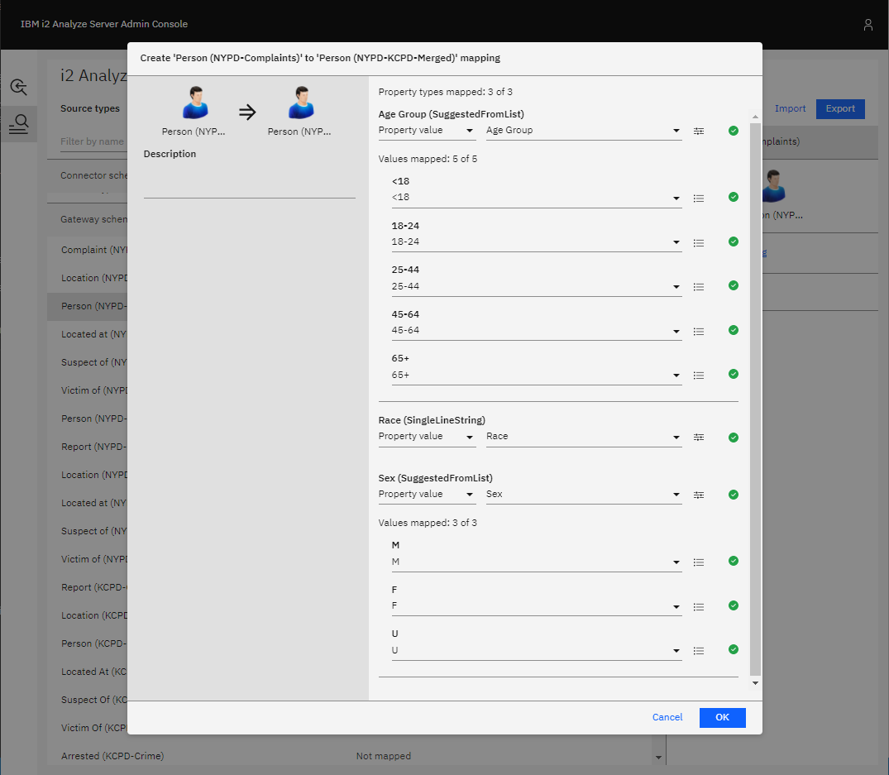
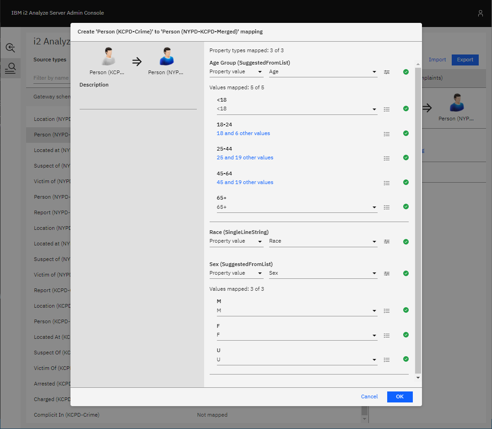
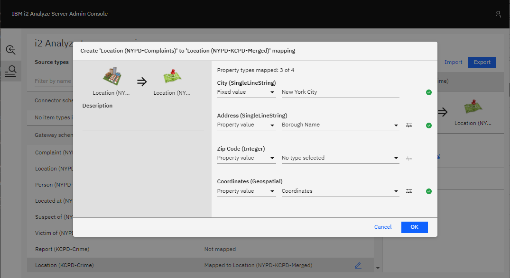
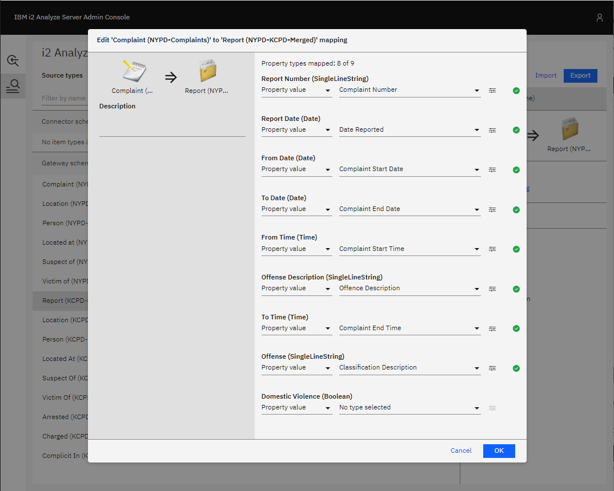
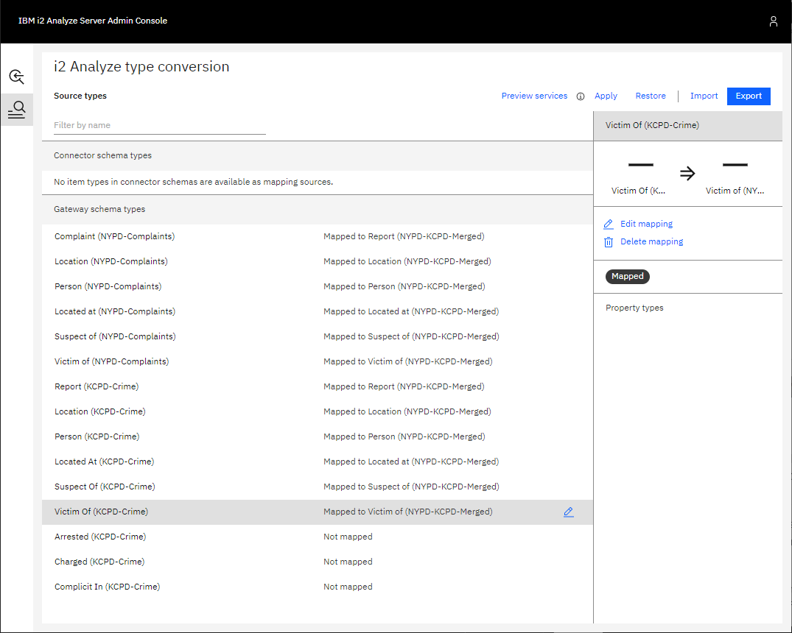

Merging two schemas
In this example scenario, two connectors - each with their own gateway schema - will be used in an i2 Analyze deployment. There will be similar item types in the two schemas, so item type mappings will be used to remove duplicate types.
Item type mappings cannot be defined in both directions between the two schemas. That is, it is not possible to map item types from schema A to schema B and, in turn, map item types from schema B to schema A. You will see how to overcome this by creating a third gateway schema that contains all the types we want to include from the two original schemas before defining mappings to the new schema.
Setting up the scenario
To follow this scenario, deploy i2 Analyze with the example NYPD connector and KCPD connector both configured to use gateway schemas.
Reviewing the item types
Open the schema/nypd-complaint-data-schema.xml and schema/kcpd-crime-data-schema.xml
schemas in Schema Designer to see the item types they provide. Notice that both schemas
have entity types to represent:
- people
- complaints/reports
- locations
They both also have link types to represent:
- a complaint having occurred at a location
- a person being the victim of a complaint
- a person being the suspect of a complaint
The KCPD-Crime schema has additional links to represent:
- a person being complicit in a complaint
- a person having been arrested for a complaint
- a person having been charged for a complaint
There are obviously duplicate item types, which can be resolved by defining item type mappings. Review the item types and decide which of the duplicate types you prefer.
For the purpose of this example, the preferred item types where there are duplicates will be:
- Person (NYPD-Complaints)
- Report (KCPD-Crime)
- Location (KCPD-Crime)
- Located At (NYPD-Complaints)
- Suspect Of (NYPD-Complaints)
- Victim Of (NYPD-Complaints)
However, item type mappings can only be defined between two schemas in one direction. So it is not possible to map the Person type in the KCPD-Crime schema to the Person type in the NYPD-Complaints schema and map the Complaint type in the NYPD-Complaints schema to the Report type in the KCPD-Crime schema.
To overcome this, you can create a new schema containing all of the preferred item types from both schemas. Then, once that is configured as a gateway schema, types from the NYPD-Complaints and KCPD-Crime schema can both be mapped to it.
Creating a new schema
Use Schema Designer to create a new schema containing types identical to the
preferred item types you chose from the NYPD-Complaints and KCPD-Crime schemas.
An example containing the types listed above is provided in
schema/nypd-kcpd-merged-schema.xml.
Configure this new schema as a gateway schema in your deployment. For more information on how to do this, see Gateway schemas. Be sure to choose an appropriate short name for this schema, e.g. "NYPD-KCPD-Merged".
Configuring item type mappings
Following the process outlined in Configuring item type mappings, you can define mappings of types from the NYPD-Complaints and KCPD-Crime schemas to types in the NYPD-KCPD-Merged schema. Examples of specific mappings you might define are outlined below, but the general idea is to map pairs of duplicate types in the NYPD-Complaints and KCPD-Schema to their corresponding type in the new merged schema.
Start by opening the i2 Analyze Server Admin Console.
Entities
People
The preferred Person type listed above is the one defined in the NYPD-Complaints schema. This is copied by the Person type in the new NYPD-KCPD-Merged schema, so mappings can be defined from the Person types in the NYPD-Complaints and KCPD-Crime schemas to the Person type in the NYPD-KCPD-Merged schema.
First, create a mapping from Person (NYPD-Complaints) to Person (NYPD-KCPD-Merged). Since these two types are identical, all the properties will have mappings generated automatically, as shown below. All that is needed is to click OK to confirm the mapping.

Second, create a mapping from Person (KCPD-Crime) to Person (NYPD-KCPD-Merged) and map the properties how you would if you were mapping to the NYPD-Complaints Person type. Example property mappings you might define are shown below.

Locations
Similarly, the Location (NYPD-Complaints) and Location (KCPD-Crime) types can both be mapped to Location (NYPD-KCPD-Merged).
The Location (NYPD-KCPD-Merged) type is identical to Location (KCPD-Crime), since that is the preferred Location type as listed above. Start by mapping Location (KCPD-Crime) to Location (NYPD-KCPD-Merged), making use of the automatically-generated property mappings.
Then, map Location (NYPD-Complaints) to Location (NYPD-KCPD-Merged). Examples of property mappings you might define are shown below.

Reports
Following the same process, map the Complaint (NYPD-Complaints) and Report (KCPD-Crime) types to the Report (NYPD-KCPD-Merged) type. The Report type in the merged schema is identical to the Report type in the KCPD-Crime schema, so once again all the property mappings will be populated for you in that case. The mapping of Complaint (NYPD-Complaints) to Report (NYPD-KCPD-Merged) might be defined as follows.

Links
The Located At, Suspect Of, and Victim Of link types in both the NYPD-Complaints and KCPD-Crime schemas can be mapped to the corresponding link types in the NYPD-KCPD-Merged schema, which are identical to the appropriate NYPD-Complaints link types.
Once all mappings are defined, you should see that all types - except the Complicit In, Arrested, and Charged links from the KCPD-Crime schema - have been mapped to the NYPD-KCPD-Merged schema.

- Click Apply in the top-right. This applies the mappings to the test environment that is available only through the Admin Console. It does not apply the mappings to the live server.
- Click Preview services to open a preview of how the services would behave with the mappings you have configured.
- Go back and make any changes to the mappings, repeating steps 1 and 2 until you are satisfied with the configuration.
Applying the item type mappings to the i2 Analyze server
To apply the mapping configuration you have created on the i2 Analyze server for all users, see Applying the mapping configuration to the i2 Analyze server.
The result
By creating a new gateway schema and defining item type mappings to it, you have mitigated the problems caused by duplicate or similar item types in the NYPD-Complaints and KCPD-Crime schemas without being limited to defining mappings in just one direction between them.